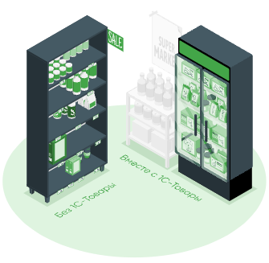
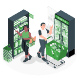
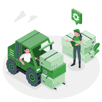

Управление запасами розничного магазина
Использование сервиса 1С-Товары позволяет значительно упростить работу по формированию заявок поставщику.

Управление запасами
Сервис 1С-Товары позволяет рассчитать необходимое количество товаров на полках (уровень запасов), помогает организовать
систему контроля за остатками товаров, а также вовремя и в нужном количестве закупать у поставщиков.
Автозаказ товаров
Сервис 1С-Товары позволяет рассчитать необходимое количество товаров на полках (уровень запасов), помогает организовать
систему контроля за остатками товаров, а также вовремя и в нужном количестве закупать у поставщиков.
Анализ магазина
Сервис 1С-Товары позволяет рассчитать необходимое количество товаров на полках (уровень запасов), помогает организовать
систему контроля за остатками товаров, а также вовремя и в нужном количестве закупать у поставщиков.
Прогнозирование спроса
Сервис 1С-Товары позволяет рассчитать необходимое количество товаров на полках (уровень запасов), помогает организовать
систему контроля за остатками товаров, а также вовремя и в нужном количестве закупать у поставщиков.
Управление поставками
Сервис 1С-Товары позволяет рассчитать необходимое количество товаров на полках (уровень запасов), помогает организовать
систему контроля за остатками товаров, а также вовремя и в нужном количестве закупать у поставщиков.
Управление ассортиментом
Сервис 1С-Товары позволяет рассчитать необходимое количество товаров на полках (уровень запасов), помогает организовать
систему контроля за остатками товаров, а также вовремя и в нужном количестве закупать у поставщиков.
Управление продажами
Сервис 1С-Товары позволяет рассчитать необходимое количество товаров на полках (уровень запасов), помогает организовать
систему контроля за остатками товаров, а также вовремя и в нужном количестве закупать у поставщиков.
Подключи любой продукт на 1 месяц бесплатно и оцени наши приемущества
С нами удобнее
Без 1С-Товары
Лишний товар складируется и не продается
Постоянно приходится думать какой продукт будет актуален, а какой стоит выводить из ассортимента
Лишний товар складируется и не продается
Постоянно приходится думать какой продукт будет актуален, а какой стоит выводить из ассортимента
Лишний товар складируется и не продается
Постоянно приходится думать какой продукт будет актуален, а какой стоит выводить из ассортимента
Лишний товар складируется и не продается
Вместе с 1С-Товары
Организованная система остатков
В магазине есть определенная ассортиментная матрица, поддерживающая актуальный ассортимент
Рассчитанный прогноз спроса
В магазине есть определенная ассортиментная матрица, поддерживающая актуальный ассортимент
Организованная система остатков
В магазине есть определенная ассортиментная матрица, поддерживающая актуальный ассортимент
Система контроля упущенных продаж
Предоставляем техподдержку для наших клиентов
Если у вас возникнут сложности с использованием 1С-Товары, обращайтесь в нашу техподдержку. Техподдержка работает
круглосуточно. Вы можете связаться с нами любыми удобными для Вас способами. При использовании техпомощи просим
соблюдать правила обращения.
Вы можете связаться с нами через 1С-Коннект и 1С-Товары. Поддержка пользователей
Телефон техподдержки
+7-495-111-00-10
E-mail техподдержки
info@rozn.info
Для розничных магазинов и ресторанов

Получайте рекомендации по управлению ассортиментом
Для этого подключите бесплатно новый тариф «1С-Ритейл Чекер».
Каждую неделю вам на почту будет приходить письмо с рекомендациями:
какие товары необходимо срочно купить, чтобы избежать упущенной прибыли из-за пустых полок;
какие товары у вас в избытке, а какие следует отнести к неликвидам;
какие товары стоит пересчитать, чтобы быть уверенным в правильности учета.
Подробнее о 1С-Ритейл Чекер
Прогнозируйте спрос и управляйте запасами
Используйте 1С-Товары для более точного прогноза спроса. 1С-Товары учитывают средние продажи, тренды, периоды дефицита
товара (пробелы на полках), сезонность спроса, праздники, распродажи, акции.
Ежедневно 1С-Товары автоматически проверяют минимальные остатки и своевременно отправляет заявку поставщику, используя
результаты прогноза. Так вы избежите как дефицита, так и излишков товара в магазине.
Подробнее о 1С-Ритейл Чекер
Планируйте ассортимент без ошибок
Узнайте, какие товары приносят вам прибыль и всегда должны быть в ассортименте. И, наоборот, выводите из ассортимента
товары с низкой наценкой и оборачиваемостью.
Контролируйте бизнес и повышайте прибыль
Для этого используйте блок аналитики.
Пробуйте разные варианты повышения продаж – новые товары, изменение наценки, перераспределение площади. Убедиться в
правильности действий помогут отчеты. Блок аналитики доступен через Интернет и сделан как приборная панель индикаторов
деятельности, что позволяет быстро заметить изменения.
Для оптовых поставщиков

Планируйте поставки товаров в собственные или арендованные торговые точки
Получайте с помощью 1С-Товары текущие остатки товаров в магазинах и правильно определяйте размер поставок. Система
прогноза спроса, встроенная в 1С-Товары, поможет обеспечить постоянное наличие на полках магазинов ходового товара и
позволит избежать «оверстока» на ваших складах.
Для такого сценария работы предусмотрен специальный выгодный тариф «1С-Товары 300».
Подробнее о 1С-Ритейл Чекер
Повышайте эффективность обработки полученных заказов
1С-Товары позволяют синхронизировать наименования товаров у поставщика и магазина, что дает возможность автоматически
загружать заявки от розничных магазинов в учетную систему и не тратить много времени на сопоставление номенклатуры.
Подробнее о 1С-Ритейл Чекер